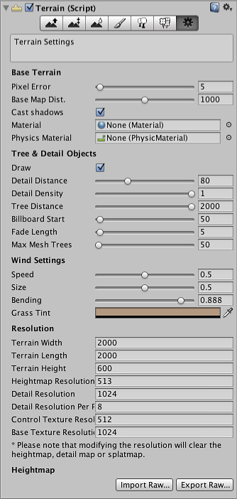

Thank you for helping us improve the quality of Unity Documentation. Although we cannot accept all submissions, we do read each suggested change from our users and will make updates where applicable.
For some reason your suggested change could not be submitted. Please try again in a few minutes. And thank you for taking the time to help us improve the quality of Unity Documentation.
The final tool on the terrain toolbar is for settings:-
Settings Inspector
Settings are provided for a number of overall usage and rendering options as described below:-

Base Terrain
Property:
Function:
Pixel Error
The accuracy of the mapping between the terrain maps (heightmap, textures, etc) and the generated terrain; higher values indicate lower accuracy but lower rendering overhead.
Base Map Distance
The maximum distance at which terrain textures will be displayed at full resolution. Beyond this distance, a lower resolution composite image will be used for efficiency.
Cast Shadows
Does the terrain cast shadows?
Material
The material used to render the terrain. This should use a suitable shader, for example Nature/Terrain/Diffuse (this shader is used if no material is assigned) or Nature/Terrain/Bumped Specular.
Physics Material
The Physic Material used for the terrain surface to specify its friction and bounce.
Tree and Detail Objects
Property:
Function:
Draw
Should trees, grass and details be drawn?
Detail Distance
The distance (from camera) beyond which details will be culled.
Detail Density
The number of detail/grass objects in a given unit of area. The value can be set lower to reduce rendering overhead.
Tree Distance
The distance (from camera) beyond which trees will be culled.
Billboard Start
The distance (from camera) at which 3D tree objects will be replaced by billboard images.
Fade length
Distance over which trees will transition between 3D objects and billboards.
Max Mesh Trees
The maximum number of visible trees that will be represented as solid 3D meshes. Beyond this limit, trees will be replaced with billboards.
Wind Settings
Property:
Function:
Speed
The speed of the wind as it blows grass.
Size
The size of the “ripples” on grassy areas as the wind blows over them.
Bending
The degree to which grass objects are bent over by the wind.
Grass Tint
Overall color tint applied to grass objects.
Resolution
Property:
Function:
Terrain Width
Size of the terrain object in its X axis (in world units).
Terrain Length
Size of the terrain object in its Z axis (in world units).
Terrain Height
Difference in Y coordinate between the lowest possible heightmap value and the highest (in world units).
Heightmap Resolution
Pixel resolution of the terrain’s heightmap (should be a power of two plus one, eg, 513 = 512 + 1).
Detail Resolution
Resolution of the map that determines the separate patches of details/grass. Higher resolution gives smaller and more detailed patches.
Detail Resolution Per Patch
Length/width of the square of patches renderered with a single draw call.
Control Texture Resolution
Resolution of the “splatmap” that controls the blending of the different terrain textures.
Base Texture Resolution
Resolution of the composite texture used on the terrain when viewed from a distance greater than the Basemap Distance (see above).
Heightmap Import/Export Buttons
The Import Raw and Export Raw buttons allow you to set or save the terrain’s heightmap to an image file in the RAW grayscale format. RAW format can be generated by third party terrain editing tools (such as Bryce) and can also be opened, edited and saved by Photoshop. This allows for sophisticated generation and editing of terrains outside Unity.